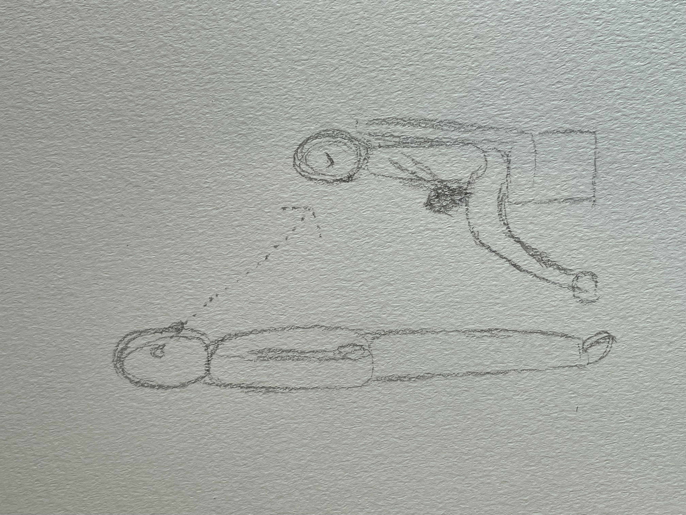
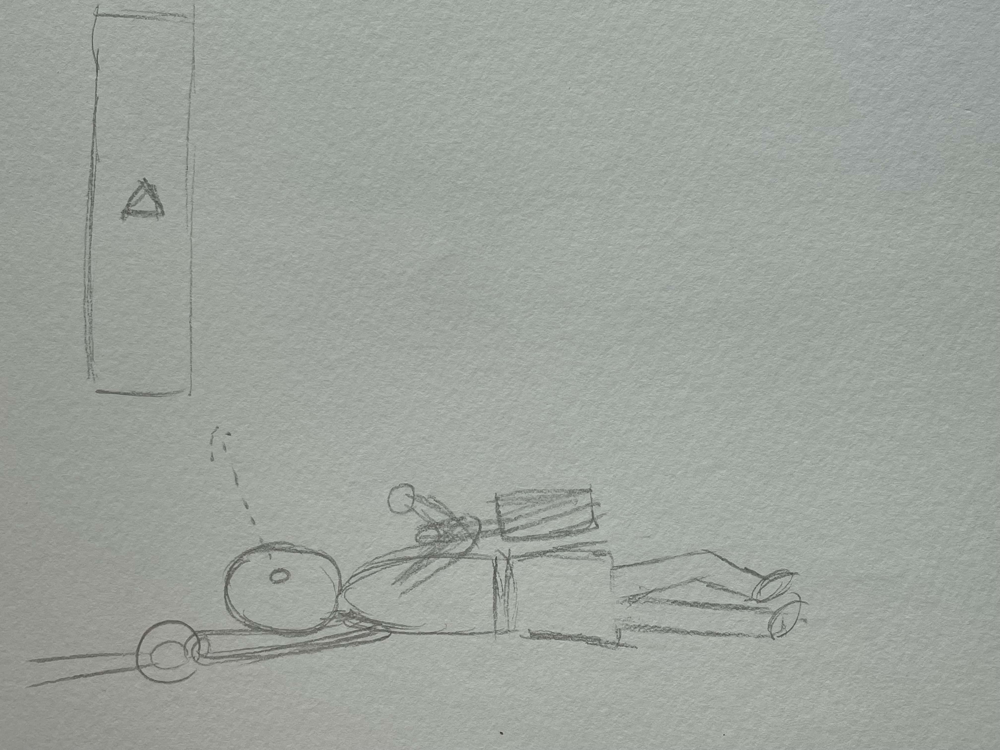
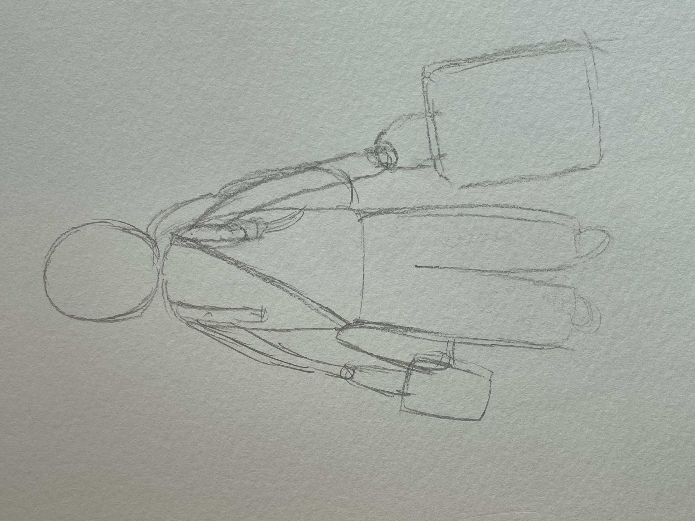
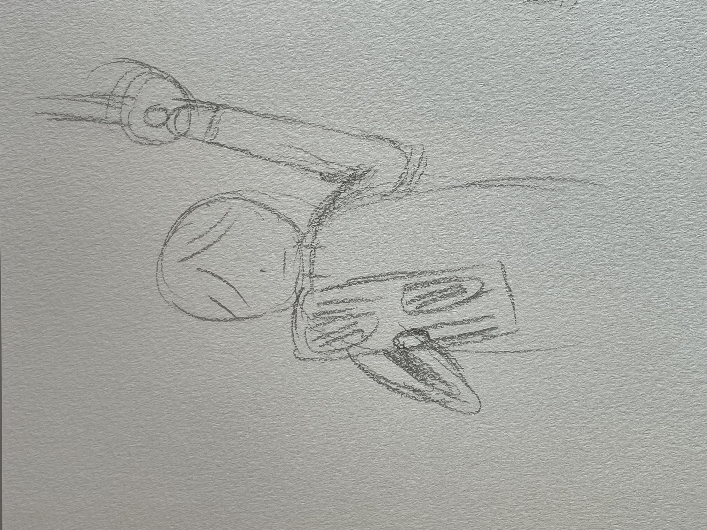
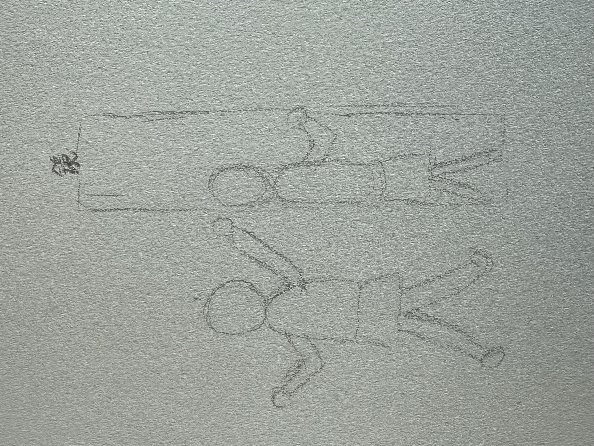

観察の課題
- 観察場所
- バイト中
- 感想
通学中の電車の中
 これは、座っている人を直視する人のイラストです。
初めは、知り合いなんだろうと勝手に思っていましたが、観察しているとどうも知り合いではない ようでした。
この方を観察していてただただ怖かったです。
 これは、何か書いている人のイラストです。
これは、何か書いている人のイラストです。何を書いていたのかは分かりませんでしたが、とても必死に書いていたのが目に留まりました。
 これは、広告動画を見ている人のイラストです。
何個かの広告が繰り返されているだけなのに動画をずっと見続けていました。
 これは、大荷物の人のイラストです。
どこかからの帰りなのか、よくわかりませんが、とにかくたくさんの荷物を持っていました。
 これは、PCを開いて作業している人のイラストです。
これは、PCを開いて作業している人のイラストです。この方を見つけたのがまぁまぁ混んでいた時間帯だったので観察しました。
 これは、リュックを地面に置いている人のイラストです。
これは、リュックを地面に置いている人のイラストです。私は立っているときは前にかける派なので少し驚いたのでイラストにしました。
 これは、新聞を読んでいる人のイラストです。
座って読んでいる方は何度か見たことがありましたが、立ち読みしている方は初めて見ました。
 これは、鏡の前で歌いながら踊る子供のイラストです。
バイト中によく見る光景ですが、改めて観察したらとても面白かったので載せました。
毎日何気なく見ている光景を「観察」してみると面白い発見がたくさんあって楽しかった。
これから、意識して観察してみるのもおもしろそうだと思った。